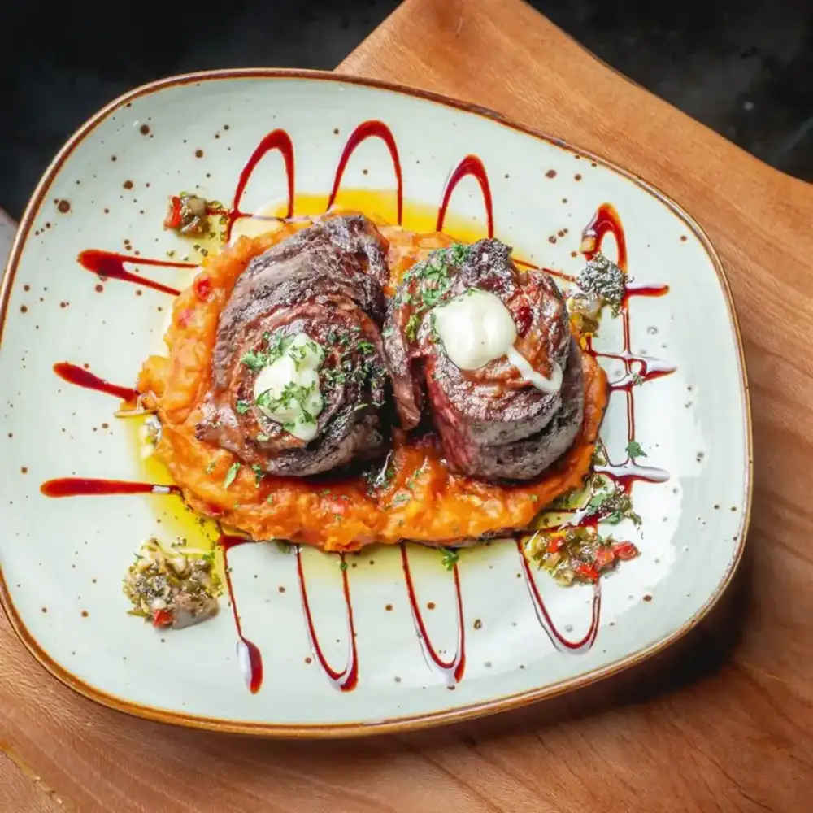
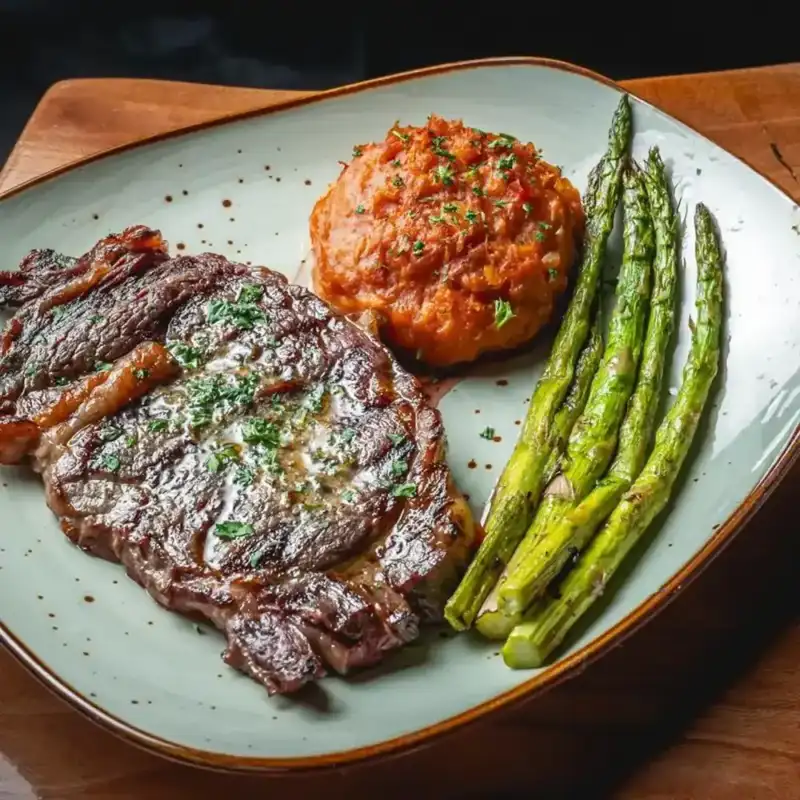
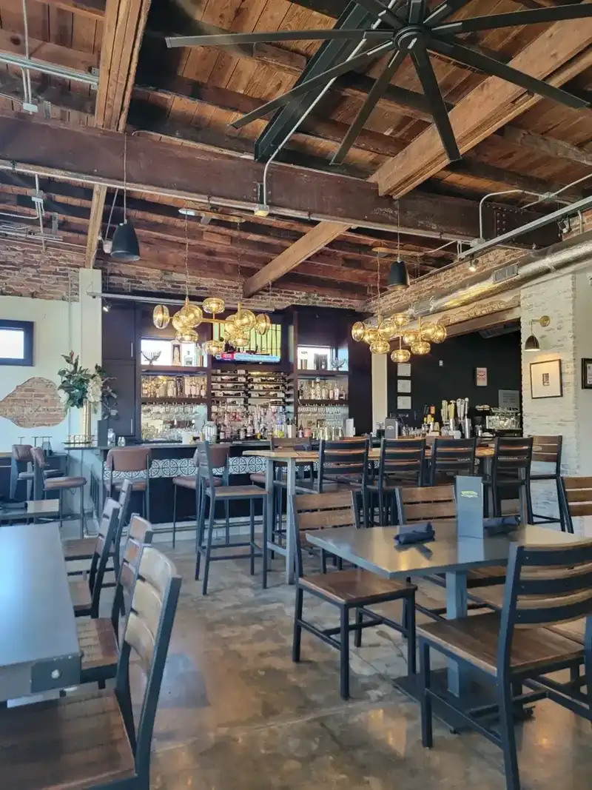

Tapas and seafood
Gambas al ajillo, crispy fish bites and a seafood stew inspired by the Andalusian coast.

Fish & meat market · West Tampa
Index of the menu
Tapas, Cuban sandwiches and fresh grouper, with breakfast from 8am.

Rooted in West Tampa
From a crisp Tampeño Cuban to a blackened salmon, cooked the family way.
Gambas al ajillo, crispy fish bites and a seafood stew inspired by the Andalusian coast.

The Tampeño Cuban with crispy pork belly and Manchego, served with fries. Breakfast runs from 8am Monday to Saturday.

Grilled meats and fish cooked to order, served with signature sofrito yuca mash.
4.8 / 5 · 457 Google reviews
1Best grouper I ate on our trip. So good we ate here twice during our recently vacation. Traditional Cuban, fair, seafood, lots of other things beside. Magala gave excellent service first night. Not too busy late as we arrived into the Tampa area later Saturday dinner. Kids meals available - including excellent strip steak. Entire family was pleased. Cakes (chocolate & orange) to go were both excellent.
2Great lunch experience. Atmosphere is jazzy-classy, still casual. Food is AMAZING! I had the tampeno Cuban sandwich with the crispiest bread crust ever. I cannot really describe how delicious the fries were, loved the Manchego cheese layer and how it played with the cilantro sauce. My wife ordered a Grouper sandwich, top of the line. They have a wonderful bar that complements the atmosphere.
3I ordered the seafood salad and La Minuta (red snapper). Both dishes were fresh and delicious. The price was quite reasonable. My overall experience was very pleasant, encompassing the service, the atmosphere, and, importantly, the pet-friendly environment. I highly recommend trying this establishment if you're looking for non-tourist fried food that is served in most restaurants.
About
Spanish, Cuban and Italian cooking, inspired by the cultures, traditions and food that shaped West Tampa and its families.
Exposed brick, warm lighting and a welcoming bar, with seating indoors or out. Family seasoned flour, sofrito and yuca mash show up all over the menu.
Parties and catering, from tapas to grilled meats and fresh salads.

Visit
3413 W Tampa Bay Blvd, Tampa, FL 33607
Plenty of parking behind the restaurant. Pet-friendly.